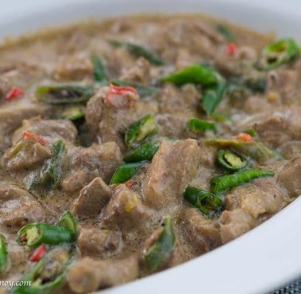

Pork Bicol Express

Pork cooked in coconut milk mixture with chillies and shrimp paste.
This dish has the spiciness and delicious taste that is
perfect with white rice.
This meal is easy to make and requires just a few simple
ingredients. It's sure to become a family favorite!
Ingredients
- 1 lb. pork shoulder sliced into cubes
- 3 pieces long green pepper siling pansigang, sliced into thin pieces
- 8 pieces bird's eye chili siling labuyo or Thai chili, sliced into small pieces
- 1 piece onion sliced
- 4 cloves garlic crushed
- 1 pack Knorr Ginataang Gulay mix 45g
- 1 tablespoon shrimp paste(bagoong alamang)
- ¼ teaspoon ground black pepper
- 2 ¼ cups water
Steps
-
Heat oil in a cooking pot
-
Sauté garlic and onion until the onions get soft.
-
Add the ground black pepper and pork. Sauté until the color
turns light brown.
-
Pour 1 1/2 cups water. Let boil. Cover and continue to cook
in medium heat until the pork gets tender and the water
almost evaporates completely.
-
Prepare the gata by combining ¾ cup lukewarm water and
Knorr Ginataang Gulay mix. Stir until the powder dissolves
completely. Set aside.
-
Add the long green pepper, chili pepper, and shrimp paste
into the cooking pot. Stir.
-
Pour the gata mixture into the pot. Let boil. Cover and
cook in medium heat until the liquid reduces to half. Make
sure to stir once in a while.
-
Transfer to a serving bowl.
-
Serve with rice. Share and enjoy!
Back to home